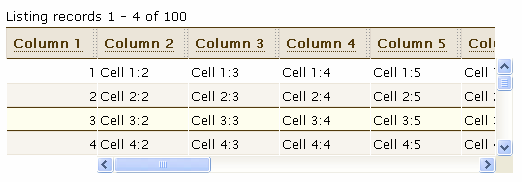
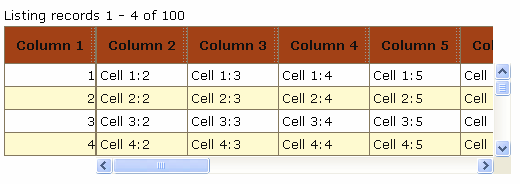
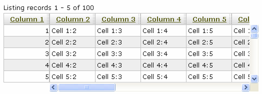

Rico LiveGrid と SimpleGrid のスタイルをカスタマイズすることは、非常に簡単です。 実際に、LiveGrid と SimpleGrid は同じクラス名と DOM 構造の多くを共有するので、 一方にあてはまるスタイルは他方に適用されることが出来ます。
Rico には、LiveGrid のためのいろいろなスタイルシートが付属します。 PHP、ASP、.net または Perl のセクションの、最初の LiveGrid の実例を選択する事によって、 それらがどのように見えるのかを知る事が出来ます。 実例のページのトップで、あなたの気に入るものを見つけるために、 それぞれの "style" セレクションを試して下さい。 実際のスタイルシートは src/css ディレクトリにあります。
ここに、"Cursor Row" が設定される "highlight" を持つ、それぞれのスタイルのスクリーンショットがあります。
greenHdg.css
tanChisel.css

grayedout.css

coffee-with-milk.css

warmfall.css

iegradient.css （Internet Explorer のみで動作します）

これらのスタイルのいくつかは、CSS Table Gallery から変更して作成されました。 そのギャラリーは LiveGrid のスタイルのためのインスピレーションとして用いる事が出来ますが、 ギャラリーの CSS は直接 LiveGrid に適用する事は出来ません。
利用出来るあらかじめ構成されたスタイルの種類でさえ、 望む方法でデータを表示するためには、 必然的にいくつかのスタイル宣言がオーバーライドされる必要があります。 以下は、スタイルがオーバーライドされる事を必要とするいくつかの一般的な状況と、 その問題を解決するために提案される CSS スタイルです。
列見出しが長すぎる時、 一般的に 2 または 3 行のテキストとして語句を送る事を認めたいです。
2 行のテキストによる見出しの表示。
.ricoLG_top div.ricoLG_cell {
height:2.5em;
}
3 行のテキストによる見出しの表示。
.ricoLG_top div.ricoLG_cell {
height:3.5em;
}
同様に、長い内容を表示するために、グリッドボディのそれぞれの行を、 より高くする必要があるかも知れません。
2 行のテキストによるボディ行の表示。
.ricoLG_bottom div.ricoLG_cell {
height:2.5em;
}
デフォルトで、ワードラップはそれぞれのグリッドセルで利用可能にされます。 しかし、時にはワードラップをオフにする事は意味をなします。
見出しとボディでワードラップをオフにする。
div.ricoLG_cell {
white-space:nowrap;
}
ボディのみでワードラップをオフにする。
.ricoLG_bottom div.ricoLG_cell {
white-space:nowrap;
}
時々、あなたはスタイルをグリッド全体に適用したいかもしれません。 それぞれのグリッドは "ricoLG_outerDiv" クラスと共に <div> で囲まれ、 id は "_outerDiv" を追加された LiveGrid コンストラクタに渡した id と等しい id です。 （すなわち、最初の実例のグリッド id は "ex1_outerDiv" です）。 このように、ページ上ですべてのグリッドにスタイルを適用する時はセレクタとして ".ricoLG_outerDiv" を、 ex1 グリッドにのみスタイルを適用する時は "#ex1_outerDiv" 利用する事が出来ます。
グリッドの背景色を設定する。
div.ricoLG_outerDiv {
background-color:aqua;
}